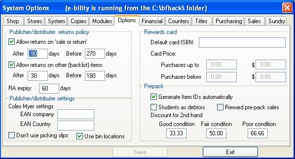

Accounts modules
There are two types of accounts supported by Bookscan for both creditors and debtors. They are:
| · | Open item accounting
|
| Open item accounting retains all transactions on the account until they are paid. At the next ageing, they are then moved to the history file. Payments are applied against specific invoices. Unpaid or part paid items remain on the account until cleared.
|
| · | Balance brought forward
|
| Balance brought forward accounts show only the account balance for anything older than the current month's transactions.
|
| The complete history can be obtained only from previous statements.
|
Creditors options
Balance brought forward credit: Here you can select the default account type that will be displayed when adding a new supplier to the supplier master.
Auto post GRN: With this option selected, supplier receipts are added to the creditor file when posting into stock. If not set, supplier invoices will need to be manually added in the Creditors window.
Debtors options
Open items debtors: See the Balance BF credit in Creditors above.
Account Export
This module allows you to export all or part of your Bookscan accounts directly into MYOB.
Web Site (Please contact Barcode Solutions for further information.)
Web: Select the typre of web site you are using.
e-Web Drop Ship Allowed: Allows the e-Web order to be drop shipped.
Path for Bookscan Large images: Set the path to the location where large images are stored.
WINSCP session name: The name of the WINSCP session created for exporting images to the web site.
Generate WINSCP script: Generates a script to call WINSCP to export the images. Can be used to run the image export as a scheduled task in Windows.
Marketing
This module allows you to report your sales against your promotional material (source) and/or against where your customers live (location).
To turn off reporting by source, tick the Disable Source checkbox. To turn off reporting by location, tick the Disable Location checkbox. If you wish, use the combo boxes to set defaults.
Other options
| · | Multiple types per sale: Check this box if you wish to know the location and the source for each item, not each transaction.
|
| · | Force Selection: Check this box if you wish to enforce the selection of the marketing options (by default in cash sales and invoicing, you can click 'Cancel' when it prompts for a selection).
|
Other modules
Distributor/publisher: This option gives users access to the warehousing functions. Picking slips can be created in the Order Entry window. There are special windows to control your picking operations, a back order control window and a scan pack despatch window for packing your orders. There is also an automated returns authorisation area to control customer return requests. The returns policy for this module is set on the Options tab window.
Promotions: This module allows you to set special pricing for selected products for a period of time.
Academic: Assists in the purchasing for books for universities and colleges.
Consignments inwards: Allows you receive products on consignment from suppliers. The module fully automates the tracking of you consignment sales and allows you to report sales, returns, shrinkage etc back to you suppliers.
Consignments out: Allows you to consign stock to your customers. It operates in a similar way to approvals but has more invoicing and control options.
Security: This option allows you to restrict user access to the various parts of Bookscan.

Distributor/publisher:
Returns policy:
You can set up your customer returns policy here. You allow some items to be sold as "sale or return" and others with stricter return conditions (or no returns).
You can also set a default expiry time for returns authorisations.
Other settings
Coles Myer: Bookscan is Coles/Myer electronic delivery compliant. If you wish to set this up please contact Barcode solutions.
Don't use picking slips: Using the checkbox, you can choose not to use the picking and packing features and just invoice your customers.
Bin locations: This option allows you to auto-allocate warehouse bin locations as new products are received. It also enables the warehouse mapping functionality.
Rewards cards
Rewards cards defaults can be set up here. See the rewards card section for details.
Pre-pack
The Pre-pack module is used to assist in selling to primary and secondary schools. Contact Barcode Solutions if you are interested in this module.
See also
Marketing - type setup